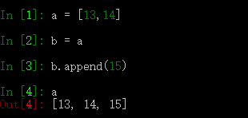
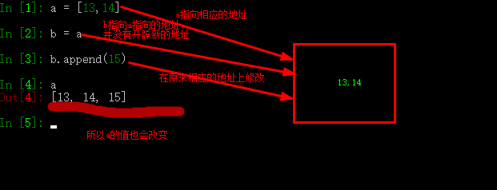

在说深浅拷贝之前，我们要明白以下原因是怎么产生的：

为什么a的数值就会变呢，我只是在b中添加了一个数值15，怎么a中也会添加一个15呢？原来python中所采用的的引用的方法，就是说a变量只是指向[13,14]这一个地址，当b = a时，并没有重新开辟一个新的地址，而是将b指向[13,14]这个地址，所以当执行b.append(15)时，就是在原地址的基础改的，即牵一发而动全身。下图可以更加清晰的表达出来。

何为深拷贝，重新在复制一份，新的这一份数值与旧的这一份一样，但是地址已经不一样了，他们已经没有的任何关系了，如下代码所示：
In [4]: a = [11,12] #将[11,12]赋值给a
In [5]: b = a #将a赋值给b
In [6]: id(a) #获取a的地址
Out[6]: 2321940139848
In [7]: id(b) #获取b的地址，并且与a的地址相同
Out[7]: 2321940139848
In [8]: import copy #深拷贝需要通过copy这个模块来实现
In [9]: c = copy.deepcopy(a) #将a深拷贝给c
In [10]: id(a) #获取a的地址
Out[10]: 2321940139848
In [11]: id(c) #获取b的地址，发现与a的截然不同，已完成了深拷贝
Out[11]: 2321937374344
In [12]: a #打印出a的值
Out[12]: [11, 12]
In [13]: c #打印出b的值
Out[13]: [11, 12]
In [14]: a.append(33) #在a中新添加一个33的新值
In [15]: a #打印出a的值，发现其值已经改变
Out[15]: [11, 12, 33]
In [16]: c #打印出c的值，发现其值没有改变，说明这是深拷贝
Out[16]: [11, 12]
In [17]:
In [32]: a = [11,22]
In [33]: b = [33,44]
In [34]: c = [a,b]
In [35]: d = copy.deepcopy(c)
In [36]: id(c)
Out[36]: 2321946266696
In [37]: id(d)
Out[37]: 2321943989128
In [38]: id(c[0])
Out[38]: 2321948894472
In [39]: id(d[0])
Out[39]: 2321946155976
In [40]: a.append(55)
In [41]: c
Out[41]: [[11, 22, 55], [33, 44]]
In [42]: d
Out[42]: [[11, 22], [33, 44]]
即只拷贝第一层，深入就不拷贝，此之谓浅拷贝，如下类代码说话
In [18]: #当一个变量=xxxx的时候，可以理解为这个变量指向的xxxx
In [20]: # 完成浅拷贝copy.copy
In [21]: # 完成深拷贝copy.deepcopy
In [22]: a = [11,22] #给a赋值
In [23]: b = [33,44] #给b赋值
In [24]: c = [a,b] #给c赋值
In [25]: d = c #d指向c的指向
In [26]: e = copy.copy(c) #拷贝c给d
In [27]: id(c) #打印出c的地址
Out[27]: 2321944795080
In [28]: id(e) #打印e的地址，与c不同，说明完成了第一层的拷贝
Out[28]: 2321938538568
In [29]: id(e[1]) #打印出e的第二层地址
Out[29]: 2321938541448
In [30]: id(c[1]) #打印出c的第二层地址，与e 的第二层地址相同，说明没有拷贝成功
Out[30]: 2321938541448
In [31]:
当copy.copy进行浅拷贝和copy.deepcopy进行深拷贝的时候，遇到第一层为不可变数据类型并且里面都不可变类型，则无法进行拷贝，两个还是同时指向同一个。但是第一层为不可变类型，第二层为可变类型，copy.copy不进行拷贝，copy.deepcopy进行拷贝
In [44]: a = [11,22]
In [45]: b = a
In [46]: id(a)
Out[46]: 2321947428616
In [47]: id(b)
Out[47]: 2321947428616
In [48]: c = copy.copy(a)
In [49]: id(c)
Out[49]: 2321934839368
In [50]: a = (11,22)
In [51]: b = copy.copy(a)
In [52]: id(a)
Out[52]: 2321938558344
In [53]: id(b)
Out[53]: 2321938558344